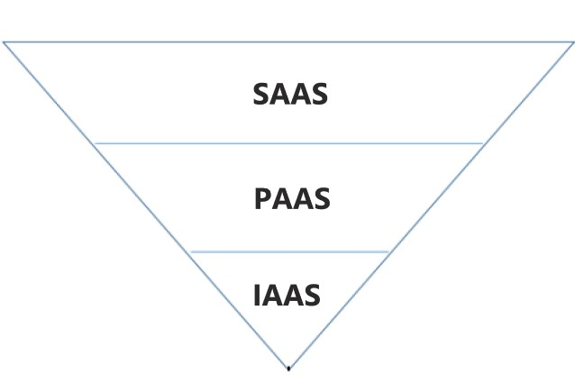

This is a term which defines a service delievering computing power over network rather
than having it physically on customers location.
The cloud works in a distributed system and shares resources among usersand let the number of users
use a particular resource simultaneously.
Cloud computing provides access to the systemusing web browers to the users regardless of where they
are or what device they are using.
Basically in this blog I'll talk about 3 applications of Cloud Computing.
At the base of the stack,IAAS provides solutions to deliever infrastucture
on demand.
It basically provides hardware related services.
It also provides storage services or virtual services.
IAAS customers rents computing resources insted of buying and installing them in their
own data centers.
PAAS offers development platform on the cloud as a service.
It allows customers to run,deploy,and manage applications
regardless of building and maintaining the infrastructures for launching an app.
SAAS provides applications and services on demand.Common examples of
applications are
photo editing, social networking etc.
SAAS interfaces are replicated on the providers infrastructures and
made more scalable and accessible through browsers on demand.